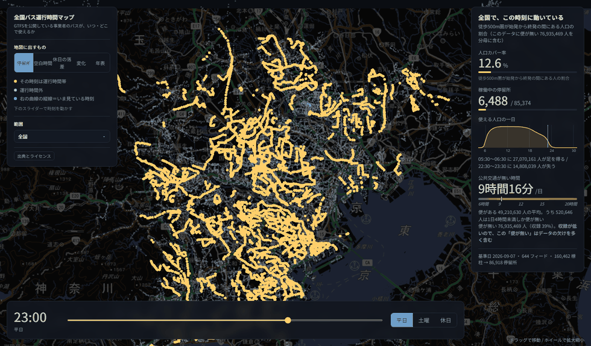
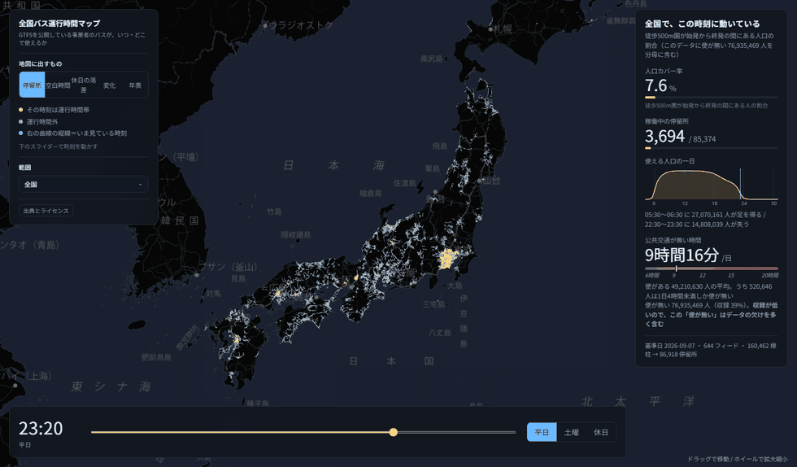
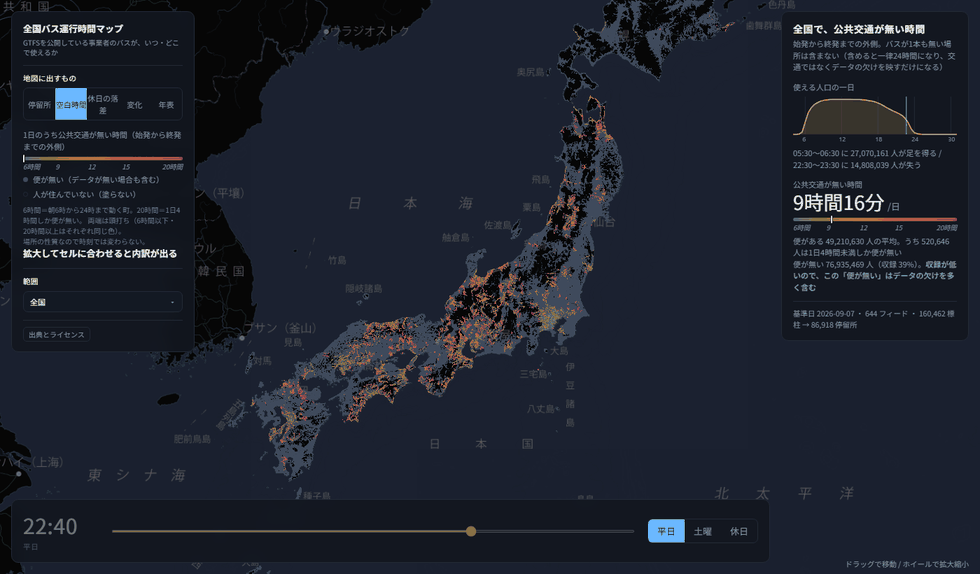
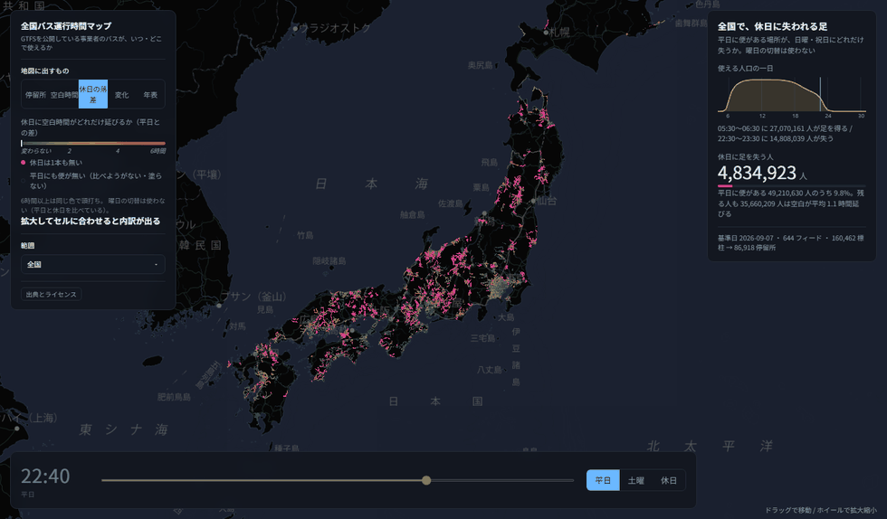
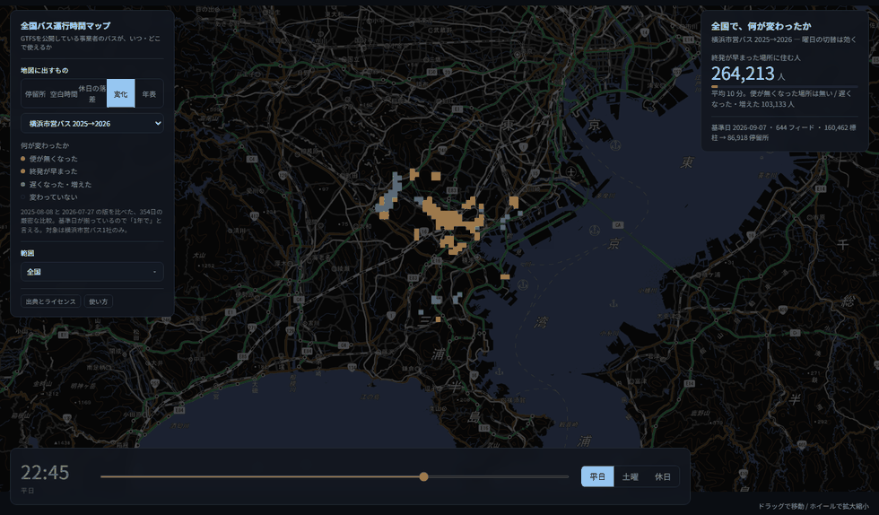
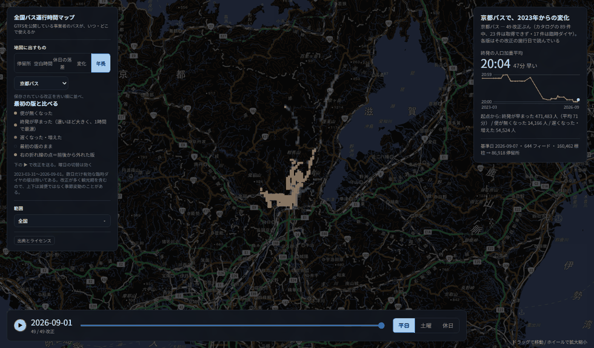

全国バス運行時間マップ — GTFSを公開している事業者のバスが、いつ・どこで使えるか
地図を開くこの地図が答えるのは「バスがあるか」ではなく 「その時刻に使えるか」 です。 最初にこの3つだけ試せば、だいたい分かります。
点が消えるのは「バスが廃止された」という意味ではありません。 その停留所の始発から終発までの外側に入った、という意味です。 判定は「始発 ≤ その時刻 ≤ 終発」の一つだけです。
操作は3か所に集まっています。
| 左のパネル | 何を見るか。 モードの切替、いま出ている色の凡例、範囲（都道府県）の選択、出典。 |
|---|---|
| 右のパネル | その結果。 選んだ範囲・モード・時刻に対する数字。一番下に基準日とフィード数。 |
| 下の帯 | いつ。 時刻スライダーと曜日。年表モードでは、時刻の代わりに改正を送るスライダーになります。 |
スマホなど横幅の狭い画面では、左のパネルが下に畳まれます。
出典や都道府県一覧は 詳しく を押すと開きます。
| 移動 | ドラッグ（スマホは1本指でなぞる） |
|---|---|
| 拡大・縮小 | ホイール（スマホは2本指のピンチ） |
| 詳細を見る | 点やセルにカーソルを合わせる |
カーソルを合わせたときの説明は、ある程度まで拡大しないと出ません。 全国を映したままでは1画素に何十件も重なっていて、どれを指したのか決められないためです。 街が画面に収まるくらいまで寄せると出ます。
出る内容はモードごとに違います。停留所モードではバス停の名前と始発・終バス、 それ以外のモードでは 500mメッシュのセル の内訳です。 色を塗っているのがセルであってバス停ではないので、 そこにバス停の名前を出すと「その時刻はそのバス停のもの」と読めてしまいます （セルの終発は徒歩500m圏で一番遅い便で、近くのバス停のものとは限りません）。

左上の 地図に出すもの で切り替えます。
それぞれ別の問いに答えているので、色の意味も右の数字も入れ替わります。
いま出ている色の説明は、常に左のパネルに出ています。
停留所を1点ずつ置き、黄色＝その時刻は運行時間帯の中、 薄いグレー＝運行時間外で塗り分けます。スライダーを動かすと塗り替わります。

500mメッシュごとに 始発から終発までの「外側」の長さを色にします。 6時間なら朝6時から24時まで動く町、20時間なら1日4時間しか便が無い場所です。 両端は頭打ちで、6時間以下と20時間以上はそれぞれ同じ色になります。
時刻では変わりません。 場所の性質を見ているので、 スライダーを動かしても地図は動きません（スライダーは薄く表示されます）。

同じ場所の空白時間が、休日に何時間延びるかを色にします。 一番強い色は「休日は1本も無い」——平日は使えるのに、日曜・祝日には便が消える場所です。 全国で 483万人がここに住んでいます。
このモードだけ曜日の切替が効きません。 平日と休日を比べているものなので、 どちらか一方を選ぶという操作に意味がないためです。

過去の時刻表と今の時刻表を突き合わせ、便が無くなった / 終発が早まった / 遅くなった・増えた を塗り分けます。左の選択で、どの比較を見るか切り替えます。
比較には必ず注意書きが付きます。読む前にそこを見てください。 たとえば「全国 前の改正との差」は、事業者ごとに1つ前の改正と比べたものなので、 間隔がばらばらです（中央値186日、最短 −34日、最長885日）。「1年で」とは言えません。

保存されている改正を1つずつ並べ、最初の版と比べた差を塗ります。 下の ▶ で自動再生、スライダーで手送りできます。右のグラフは終発の人口加重平均の推移で、 前後から外れた版にはピンクの点が付きます。
各版はその改正の施行日で読んでいます。2023年の時刻表に今日の日付を尋ねれば 「どこにも便が無い」と返ってくるので、そのままでは町からバスが消えた絵になってしまいます。

年表を作れるのは、過去の改正を保存している事業者だけです （京都バス・横浜市営バス・川崎鶴見臨港バス・西東京市はなバス）。 版の数は事業者ごとに大きく違い、1社1事業者の話であって全国の話ではありません。
曜日は 平日 / 土曜 / 休日 の3つ。休日＝日曜と祝日です （「日曜ダイヤ」しか書いていないフィードでも、文化の日の火曜日は休日として扱います）。
パラメータを付けずに開いたときは、いまの時刻・いまの曜日から始まります。 初期値であるあいだは、時計の下に「平日・いま」のように出ます。 時刻か曜日を自分で動かすと消えます。
スライダーは 4:00 から始まり、右端はデータが決めます（現在は 31:00）。 時刻表の1日は 24時を超えて続くので、25:30 は「翌日の1:30」ではなく 「その日の深夜1時半」です。深夜に開いた場合も、曜日は前日のもので始まります （日曜の 25:00 はまだ休日ダイヤ）。
左の 範囲 を開くと、都道府県が空白時間の長い順に並びます。
クリックするとその県に寄り、右の数字もその県のものになります。
戻すときは 全国に戻す。
この順位を「交通が不便な県の順位」として読まないでください。
右端の「収録」が低い県は、バスが少ないのではなく、事業者がGTFSを公開していないことが 多いだけです。順位が測っているのはデータの整備度であって、交通の水準ではありません。
一覧の色帯は、どのモードで見ていても「空白時間」の目盛りです。 休日の落差を見ているときは、地図と別の意味の色になります（見出しにもそう書いてあります）。
| 人口カバー率 | その時刻に、徒歩500m圏が始発から終発の間にある人の割合。 分母は全人口で、便が無い場所に住む 7,693万人も含みます。 |
|---|---|
| 稼働中の停留所 | その時刻に運行時間帯の中にある停留所の数 / 全停留所。 県をしぼると出ません（停留所の表は都道府県を持っていないため）。 |
| 使える人口の一日 | 横軸が時刻、縦軸が使える人口。青い縦線がいま見ている時刻です。 下に、最も増える30分と最も減る30分が出ます。 |
| 公共交通が無い時間 | 空白時間の平均。便がある場所だけの平均で、便が無い場所は入っていません。 帯の上の印が、いまの平均値の位置です。 |
| 休日に足を失う人 | 平日は便があるのに、休日には1本も無い場所に住む人の数。 |
| 終発の人口加重平均 | 年表モードで、その版の終発を人口で重みづけした平均。 人が多い場所の変化ほど強く効きます。 |
パネルの一番下に、そのデータの基準日・フィード数・標柱数と停留所数が出ます。 標柱（乗り場）を近さと名前でまとめたものが停留所です。
数字が一人歩きするのが一番まずいので、言えないことは画面にも出しています。 ここにまとめておきます。
1. カバー率は「データが公開されている範囲」の話です。
GTFSを公開していない事業者のバスは、走っていても地図に出ません。
交通の量そのものを測った数字ではありません。
2. 灰色の「便が無い」には「データが無い」が混ざります。
地図の上で両者は区別できません。人口ベースの収録率は現在 39% です。
3. 県別の順位はデータ整備度の順位です。
交通の順位ではありません。
4. 「バスがある / 無い」ではありません。
見ているのは始発と終発だけです。日中に何本あるか、
その便に乗って目的地へ行けるかは、この地図では分かりません。
5. 鉄道は入っていません。
バスの時刻表だけです。終電の後にバスがあるか、という問いには答えられません。
6. 年表と変化は、その事業者・その比較の話です。
全国が同じように動いたという意味ではありません。
フィードの中身も、こちらの判断で書き換えてはいません。 たとえば根室には終発 30:45 の停留所が1件あります。札幌 22:00 発の夜行が着く便で、 終着の1つ手前に「乗車可」のまま載っています。同じ便の他の停留所はすべて降車専用なので 入力漏れに見えますが、フィードが「乗れる」と書いている以上そのまま扱っています。 全国で1件のために推測で消すほうが危ないためです。
画面を操作するとアドレス欄が追随します。 「休日の落差の全国」を口で説明する代わりに、そのURLを送れば同じ絵が開きます。
| 意味 | 値 | |
|---|---|---|
m | モード | stops / gap / drop / change / timeline |
t | 時刻（秒） | 84000 = 23:20。m=stops のときだけ効く |
d | 曜日 | wd 平日 / sa 土曜 / ho 休日 |
p | 都道府県コード | 13 = 東京 |
s | 年表の事業者 | 一覧の順（0 = 京都バス） |
g | 年表の世代 | 48 = 49世代目 |
c | 比較の版 | 一覧の順 |
ll | 緯度,経度,縮尺 | 36.5000,137.5000,55 = 全国 |
上のどれか1つでも付いていれば、d を省いても平日で開きます
（曜日を書き出していなかった頃に配られたURLが、日曜に別の絵にならないように）。
何も付いていないときだけ、いまの時刻・いまの曜日で始まります。
地図の中の 出典とライセンス に、実際に読み込んだフィードの一覧が出ます。
大きくは次の5つです。
合計 644フィード / 506事業者・団体 / 160,462標柱 → 86,918停留所（基準日 2026-09-07）。 背景地図だけがネットワークを使い、それが落ちても点は描画されます。
ブラウザだけで動きます。インストール不要・アカウント不要・無料。 Chrome / Safari / Firefox / Edge の現行版、スマホでも同じものが開きます。
| 最初の表示が遅い | 初回は約3MBを読みます。2回目からはブラウザの控えが効きます。 |
|---|---|
| 点にカーソルを合わせても何も出ない | 拡大が足りません。街が画面に収まるくらいまで寄せてください。 |
| スライダーを動かしても地図が変わらない | 空白時間・休日の落差・変化のモードでは、時刻で変わりません（場所の性質を見ているため）。 スライダーが薄くなっているのがその印です。 |
| 年表で色が消える版がある | その版にその曜日のダイヤが入っていません。左のパネルに理由が出ます。 |
| 自分の町が真っ暗 | 便が無いのか、事業者がGTFSを公開していないのか、地図の上では区別できません。 前者と後者は混ざっています。 |